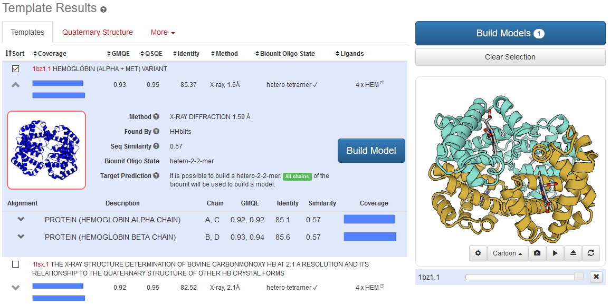

SWISS-MODEL Examples
How to build a homology model using superoxide dismutase
Here, we provide a step-by-step example on how to build a homology model for the Superoxide Dismutase [Cu-Zn]
protein from Drosophila melanogaster (SOD, UniprotKB AC: P61851).
This protein destroys radicals which are normally produced within the cells
and which are toxic to biological systems.
In its native form, the protein is a homodimer with two metal-binding sites per subunit: one for Cu and one for Zn.
Click the "Start Modelling" button or select the option "myWorkspace" from the navigation bar (Modelling →
myWorkspace) to start a new modelling project.
You can either paste the protein sequence or provide the UniprotKB AC (P61851) of your target sequence in the input form.
Alternative input formats can be selected using the apposite drop-down menu.
A project title is automatically suggested from the information retrieved from SWISS-MODEL's own copy of the UniprotKB annotation, if a UniProtKB AC is used.
To search for available template structures, click on the “Search for Templates” button.
Once the search is started, you can verify the status of the job, and optionally you can bookmark the page using the provided link
and come later to visualise the results. Otherwise you need to wait until the search finishes.
Note: By using the "Build Model" option, an automatic pipeline will run both the template search and the template selection steps (see more details in the Automated Mode section of the SWISS-MODEL Help page).
The automated mode selects templates that maximise the expected quality of the model. However, this does not garantee that the best template available is selected.
Depending on the intended application of a model, selecting a different template than the top-ranked one might be necessary.
If the aim is to build a model of a protein in complex with a ligand rather than its apo form, a template with a similar ligand or in a holo conformation should be preferred.
(See interactive Sample output)
When the template search is finished, the output page includes a main table showing the list of available templates ranked according to the expected
quality of the resulting models (see here for more details on template ranking).
For each template, the following information is provided:
- A checkbox to select and visualise the template in the 3D panel
- The SMTL ID of the template and a link to the SWISS-MODEL Template Library page associated to that SMTL entry
- The protein name of the template
- The coverage to the target sequence (darker shades of blue refer to higher sequence identity)
- The GMQE (Global Model Quality Estimation)
- The QSQE (Quaternary Structure Quality Estimation)
- The target–template sequence identity
- The experimental method used to determine the structure (and resolution, if applicable)
- The oligomeric state of the SMTL biounit
- The ligands present in the experimental structure (if any)
- A clickable icon to expand the box with the description of the template
As you can see from the table, there are multiple templates which cover the complete sequence and share a considerable sequence identity with our target sequence. Let's analyse them in more detail.
By clicking on the checkbox, different template structures can be visualised and compared to by structure superposition in the 3D viewer.
Let's rank them according to their coverage to the target sequence, and let's select the four top-ranking templates. We can observe that they all share a high sequence identity to the target (Identity > 67%).
As expected, their structures also look very similar as they superimpose very well. Some local differences are present at the level of loop regions.
What can be the possible reason of this?
Typically, due to their higher variability in terms of sequence and structure compared to the rest of the protein, loops are the regions that are the most susceptible to modelling errors.
On the other hand, they are often involved in protein function, hence accurately modelling their structure is of crucial importance.
Are these loops important for the function of the protein?
To get an overview of the similarity between the selected templates click on the "Sequence Similarity" tab.
An interactive chart shows the relationship between the templates in the sequence similarity space and your target protein is represented as a filled red circle.
Each template is displayed as a blue circle, where the thick blue arc indicates target coverage. The distance between different templates is proportional to the pairwise sequence similarity, i.e. evolutionarily closely related templates will be clustered together.
By clicking on a circle you can look at available information on the specific template. You can also select and visualise a group of similar templates by hovering over the cluster.
The superposed structures of the selected templates will be instantaneously displayed in 3D, where you can inspect their structural differences.
Would you expect large structural variations within a cluster?
By looking at the "Alignment" tab, you can notice that the sequences of the selected templates are very similar overall.
Compared to the sequence of the target, they show some insertions and deletions as well as some amino acid substitution.
By clicking on the cog icon, you can change the colouring scheme of the alignment by selecting one of the many available options.
Let's select the Clustal colouring scheme.
Based on the alignment you see, can you now explain the observed structural difference between the templates?
As expected, the regions that show most of the structural differences correspond to positions in the alignment where amino acid substitutitons and indels are present.
Even if these differences seem to have little or no impact on the overall structure of the protein, they can still play an important role for the function of the protein, i.e. ligand- and/or substrate-binding.
If we go back to the template table ("Templates" tab), we can see that not all of the selected templates have been solved in presence of the natural ligands (Cu and Zn).
In particular, only the top-ranked template, after sorting by sequence identity, binds to the Zn ion, while the second-best template structure contains both the Zn and the Cu ion.
Which template(s) would you select to build your model?
After you have selected the template(s), click the 'Build Model' button to run the modelling job.

For each model generated based on the selected templates, the following information is provided:
- A file containing the model coordinates along with relevant information on the modelling process
- The oligomeric state of the model
- The modelled ligands
- QMEAN model quality estimation results
- The target–template sequence alignment
- The template name (SMTL ID)
- The sequence identity to the target
- The target sequence coverage
Models can be displayed interactively using the 3D viewer. By default, models are coloured by model quality estimates assigned by QMEAN to highlight regions of the model which are well- or poorly modelled.
If several alternative models have been built for a target sequence, they can be interactively superposed and visualised.
(See interactive Model Output)
Local estimates of the model quality based on the QMEAN scoring function are shown as a per-reside plot and as a global score in relation to a set of high-resolution PDB structures (Z-score).
In the first plot below, a score is associated to each residue of the model (reported on the x-axis), reflecting the expected similarity to the native structure (y-axis). Typically, residues showing a score below 0.6 are expected to be of low quality. Different chains are shown in different colours.
The second plot shows the quality of the model, as normalised QMEAN score (y-axis), in comparison to the scores obtained for high-resolution crystal structures. Higher values indicate that the model is of comparable quality to experimental structures of similar size.
Based on the results you obtained, can your homology model be considered a reliable model?
How to model the correct oligomeric state of a protein using ornithine carbamoyltransferase
In this example we show how to infer the quaternary structure of Ornithine Carbamoyltransferase from Thermus thermophilus (OTC, UniProtKB AC P96134). OTC is involved in arginine biosynthesis, where it catalyses the formation of citrulline and phosphate from ornithine and carbamoyl phosphate.Please access the SWISS-MODEL website and click "Start modelling" to start a new modelling project. Now, please provide your target protein. You can either paste the protein sequence or provide the UniprotKB AC (P96134) of your target sequence in the input form. Alternative input formats can be selected using the apposite drop-down menu. A project title is automatically suggested if a UniProtKB AC is used.
To search for available template structures, click on the “Search for Templates” button. Once the search is started, you can wait and verify the status of the job or you can bookmark the page using the provided link and visualise the results later. When the template search is finished, the output page includes a table showing the list of available templates ranked according to the expected quality of the resulting models (see here for more details on template ranking). For each template, the following information is provided:
- A clickable icon to expand the box with the description of the template
- A checkbox to select and visualise the template in the 3D panel
- The SMTL ID of the template and a link to the SWISS-MODEL Template Library page associated to that SMTL entry
- The protein name of the template
- The coverage to the target sequence (darker shades of blue refer to higher sequence identity)
- The GMQE (Global Model Quality Estimation)
- The QSQE (Quaternary Structure Quality Estimation)
- The target–template sequence identity
- The experimental method used to determine the structure (and resolution, if applicable)
- The oligomeric state of the SMTL biounit
- The ligands present in the experimental structure (if any)
As you can see from the table, the best template according to GMQE shares a sequence identity of 99.34% and is the only template annotated as monomeric, followed by homo-12-mers, homo-trimers and homo-hexamers with sequence identities ranging from 40 to 50%. It is hence very difficult to decide which template with which quaternary structure should be selected, if we only consider GMQE and sequence identity.
A more indicative view can be obtained by selecting the “Quaternary Structure”
tab. Here, the result of structural template clustering is reported as a decision tree.
Each leaf is a template labelled with the
SMTL ID and a bar indicating
sequence identity and coverage.
The decision tree
follows the levels of clustering based on oligomeric state, stoichiometry,
the topology of the complexes, and interface similarity.
The first clustering level shows two groups of templates,
monomeric and homomeric respectively. At the stoichiometry level,
templates are grouped according to the number of different subunits.
At the topology level, templates are grouped according to the arrangement
of the different subunits. At the last level of clustering,
templates are grouped according to their interface similarity.
In this example, we see that interfaces are coherent between templates,
as there is a single cluster for each topology level group.
Different template structures can be visualised and compared to by structure superposition in the 3D viewer by clicking on their name. A check mark near the sequence identity and coverage bar indicates the selected template.
According to the clustering level, which can be selected using the radio
button provided at the top of the page, a PPI Fingerprint curve is shown
for the different groups of templates.
The latter curve offers an indication of how interface conservation
(shown on the y-axis) varies as a function of the evolutionary distance
within a protein family (expressed as sequence identity on the x-axis) and
thus provides an additional criterion for quaternary structure prediction.
More specifically, the degree of conservation of an interface is expressed as
the log-ratio of the variability of interface residues over surface residues,
as calculated from a MSA. Hence, values below zero indicate that surface
residues are less prone to mutate when compared to surface residues.
The PPI Fingerprint curves follow a characteristic pattern:
when only very similar sequences are considered (80-90% sequence identity
thresholds), the ratio is close to zero and there is no difference among
different oligomeric states. When more remote homologs are included, the
interface conservation becomes stronger and eventually reaches a minimum
(sequence identity below 40%) supporting the evidence that the trimeric form
is the more conserved among the other possible options.
This evidence, along with other features of the templates, is used to estimate the accuracy of the predicted interchain contacts for a model given a specific template. This value of accuracy, defined as quaternary structure quality estimation (QSQE) score, is a number between 0 and 1 and is used to sort templates in each interface similarity level cluster. The QSQE score associated to each template can be visualised by mouse over. A value close to 1 indicates a high confidence that this template is representing the correct quaternary structure of our model. Templates showing a QSQE above 0.7, most likely leading to a model with the correct quaternary structure (4nf2.1.A in our example), are highlighted with green lines.
Even in absence of direct structural evidence, the quaternary structure
analysis indicates that the trimeric interface is subject to greater evolutionary
constraints than the rest of the protein surface, exactly as would be
expected of a true trimeric interface.
This is in contrast to the template with the highest sequence
identity (~99%) and the highest GMQE score (2ef0.1.A). However, it is worth
noting that the latter template was wrongly annotated as monomeric upon
deposition of the structure. Instead, experimental data are available
supporting the evidence that OTC is in fact a trimeric protein (Sanchez et al.).
For more information on the PPI Fingerprint and Quaternary Structure Prediction, please see the article by Bertoni et al..
How build a model using the DeepView Project Mode
In order to demonstrate how to use DeepView to build oligomeric assemblies, we are going to build a model of the protease of murine leukemia virus based on the PDB file 3S43.
(Please keep in mind that this is just an example to illustrate the workflow; presumably, there would be much better templates available.)
- Get the template in the correct quaternary state
First, check the correct biological assembly of your template protein. Copies of the asymmetric unit of the PDB files can be generated by applying the correct crystallographic symmetry operators. If you are unsure how to do this, PDB will most likely have the correctly assembled coordinate file ("Biological Assembly") for you. In our example, it is Biological Assembly coordinate file for 3S43.
Download and save the template coordinates as a PDB file to your local disk. - Remove all non-amino acid residues
Open the file in DeepView and remove all non-amino acid groups such as ions, ligands, OXT, etc. from the template (unless they are at the very end of the file). You can do this by selecting the groups in the control panel of DeepView and remove the selected residues ("Build" menu) [3s43_dimer.pdb]. - Ensure unique chain IDs
Make sure each chain has a unique name, e.g. "A","B", etc. Colouring the molecule by chain helps to check. - Target sequence
In our example, we will model the protease domain of murine leukemia virus (UniProtKB AC: P03356). As you can see, the virus-encoded polyprotein consists of several domains. Before modelling, it makes things easier to focus on the interesting segment. For example, you could use the IprScan (Jones et al.) utility to identify the individual domains. In our case, we will use residue 3-100.
Create a FASTA file with your target sequences for each chain in the SAME order as in the template, i.e. "A", then "B" etc. separated by semicolons. [target.txt] - Adjust target–template alignment in DeepView
- Load the FASTA file containing the target sequence into DeepView (Menu: Swissmodel → Load raw sequence ...),
- Open the template file with the correct biological assembly (Menu: File → Open PDB File) - generate a preliminary target–template alignment (Menu: Fit - Fit raw sequence)
- Open the alignment window and adjust alignment. Make sure NOT to align residues of different chains. Do not align to "non-amino acid residues" like HET groups or OXT. Make sure all insertions & deletions are correctly positioned in the structural context. - SWISS-MODEL submission
Save the project to your local disk [e.g. dimer_3s43_project.pdb] and submit the file to the project mode of SWISS-MODEL workspace for model-building. A new work unit will be created containing the modelling results, including log file, quality evaluation, and model project file of the modelled dimer.
Model of the dimeric protease.
How to build a model for a hetero-oligomeric protein using hemoglobin
In this example, we are going to build a model of the hemoglobin from Physeter macrocephalus (Sperm whale). Hemoglobin is the oxygen-carrying protein of red blood cells. It is made up of four protein chains (globulins) connected together to form a heterotetramer. The normal adult hemoglobin contains two alpha-globulin (UniprotKB AC: P09904) and two beta-globulin (UniprotKB AC: P09905) chains.
Go to the SWISS-MODEL main page and click "Start modelling" to start a new modelling project. Now, please provide your target protein. First, enter the UniprotKB AC (P09904) of the alpha-subunit in the target sequence input form.
Then, click the "Add Hetero Target" button and enter the UniprotKB AC (P09905) for the beta subunit.
To search for available template structures, click on the “Search for Templates” button.
Once the search is started, you can verify the status of the job, and optionally you can bookmark the page using the provided link and come later to visualise the results. Otherwise, you need to wait until the search finishes.
Once the template search is finished, available templates are listed together with information of their oligomeric state.
As you can see most templates are as expected hetero-tetramers (hetero-2-2-mers, indicating that both subunits are each twice in the template) and cover the full target sequence. The sequence identity is mostly above 80%.
We now select the Quaternary Structure view to better compare the different oligomeric states of the templates.
Here, the templates are clustered according to oligomeric state, stoichiometry, and QSQE-score (Quaternary Structure Quality Estimate), and the results are shown as a decision tree.
Each leaf of the tree is a template labelled with the SMTL ID and a bar indicating sequence identity and coverage (darker shades of blue refer to higher sequence identity).
According to the stoichiometry, two clusters are formed: we have 2-2-mers and 1-1-mers.
Different template structures can be visualised and compared to by structure superposition in the 3D viewer by clicking on their name.
The PPI Fingerprint plot shows the sequence identity of templates to the target sequence on the x-axis. On the y-axis the difference in sequence similarity between the protein surface and the protein interface is reported expressed as "Interface Conservation" score. Values below zero indicate a higher mutation rate of surface residues compared to those at the interface, confirming the interface conservation of the protein family.
It can be observed that the tetrameric interface (hetero-2-2-mers) is the more conserved.
For more information on the PPI Fingerprint and Quaternary Structure Prediction, please see the article by Bertoni et al..
We can now select templates with the correct oligomeric state. From the list of template structures, select the one most suitable for your application on the basis of the annotation provided. For example, it may be worth considering that some of the available template structures (e.g. 3cy5.1) contain the important iron-containing porphyrin compound, namely the heme group (HEM).
Upon inspection, we observe that the built model is of high quality (high GMQE, QMEAN and local quality estimates). To see the local quality estimates on the model, change the colouring scheme to QMEAN (click on the cog symbol next to the alignment to the left).